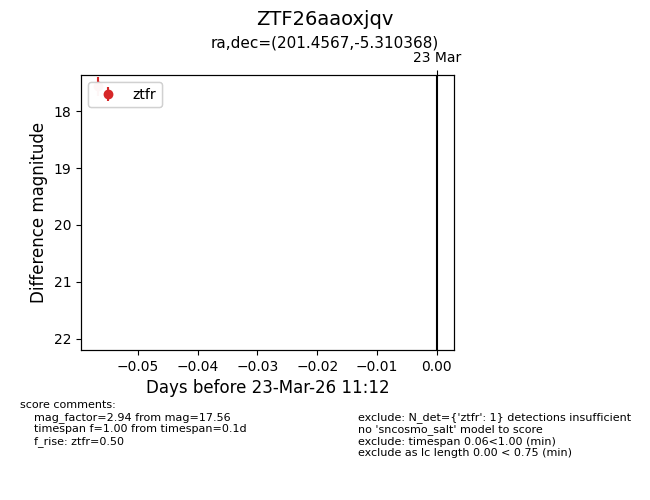
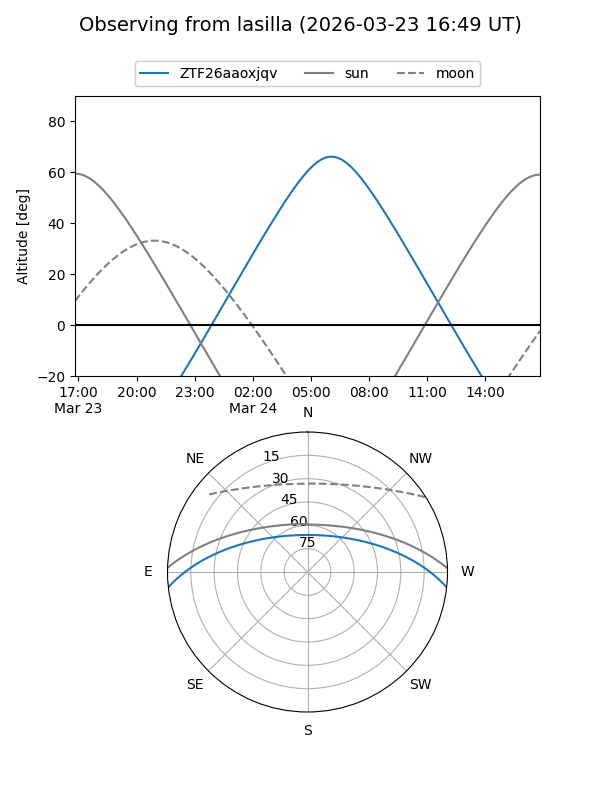
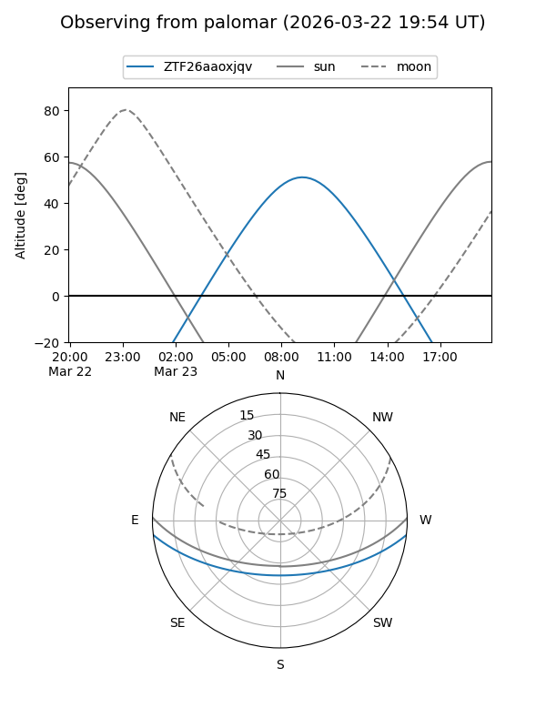

ZTF26aaoxjqv
Target ZTF26aaoxjqv at 2026-03-23 11:14
Aliases and brokers:
FINK: link
Lasair: link
ALeRCE: link
alt names
ZTF26aaoxjqv (ztf,fink_ztf)
Coordinates:
equatorial (ra, dec) = 201.4567,-5.31037
equatorial (HMS+DMS) = 13:25:49.61,-05:18:37.32
galactic (l, b) = (318.5825,+56.51282)
Flags:
Photometry:
last ztfr=17.56
1 ztfr detections
Lightcurve

Visibility


Additional plots